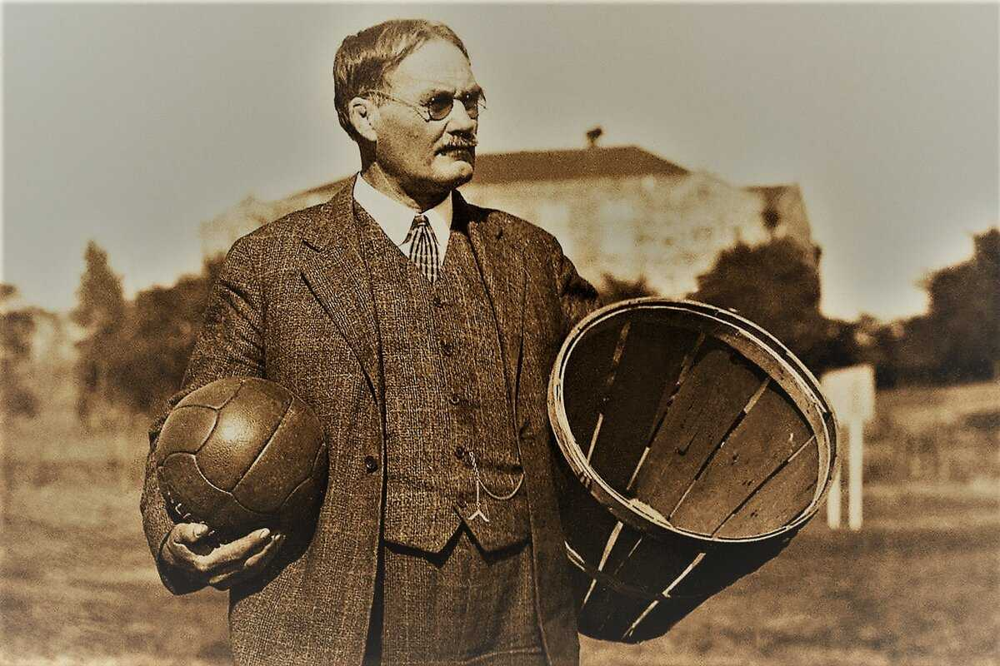

История
История баскетбола начинается в декабре 1891 года в городе Спрингфилд (штат Массачусетс, США)
Создателем игры считается преподаватель физкультуры Джеймс Нейсмит, который придумал подвижную,
но безопасную игру, которую можно было бы проводить в помещении в зимнее время.
Возникновение
Нейсмит придумал концепцию: забросить мяч в корзину, зафиксированную над паркетом.
Для этого он использовал две корзины из-под фруктов, закреплённые на высоте 3,05 м, и обычный футбольный мяч.
Изначально корзины не имели отверстий, поэтому после каждого попадания мяч приходилось доставать вручную с помощью палки.
Нейсмит разделил своих студентов на две команды по девять человек и провёл первый официальный баскетбольный матч.